{kind=link}
What Strażnik does
A server collects information and calculates scores. The app displays the map, sources and history; Android receives alerts through push notifications. You do not need an account or your own server.
Combining sources helps interpret a situation. A qualifying official message or a sufficiently serious nearby object may reach the threshold on its own; RSS articles alone cannot. The score is an application indicator, not a probability of impact.
1. Installation and updates
- Download the latest Straznik.apk to your Android phone.
- Open it from Downloads. If Android asks, allow that browser or file manager to install apps from this source.
- Confirm installation and launch Strażnik. Allow the system to scan the file; do not disable Play Protect.
- Allow notifications, choose your province and check full-screen alert permission.
The “Install unknown apps” permission — and how to revoke it
Strażnik is not on Google Play, so the APK is opened from Downloads. Android will not install it until the app that opens the file — usually Chrome, sometimes a file manager or the GitHub app — has been granted Install unknown apps. That is why the browser interrupts the installation and sends you to a system settings screen with an Allow from this source switch. This is a normal step, not an error, and not a sign that anything is wrong with the file.
Two things are worth knowing. First, this is not the old global “unknown sources” setting — the permission applies only to the single app that opens the file, which is the safer design. Second, it stays on: until you turn it off, that browser can install apps later as well. So once Strażnik is installed, it is worth going back and restoring the original setting.
- Open Settings → Apps → Special app access → Install unknown apps.
- Pick the app you used to open the file (usually Chrome; when the permission is on, it is listed as “Allowed”).
- Turn Allow from this source off.
A faster route: search unknown in Settings. You can also long-press the browser icon → App info → Install unknown apps. The wording differs slightly between Android 13, 14 and 15 and between manufacturers (Samsung, Xiaomi), but the path is the same.
Strażnik works normally once the permission is off — it is only needed at the moment of installation. The next update will ask for it again, and that is exactly the safer setting: granted for one installation rather than permanently. Do not turn off Play Protect — it scans the file before installation and has nothing to do with this permission.
If the GitHub app intercepts the download link and stalls, open the link in your browser instead. A backup APK in the repository is also available.
Updating from inside the app
Since 1.7.23 Strażnik checks for a release at every launch and whenever the app returns to the foreground (no more often than every 30 minutes). It used to check once a day, so a fix could wait almost a full day. The update prompt includes the version and a description of the changes. You can also use ⚙ → App → Check for updates.
For a normal, non-critical update, choose Later (the updater may display Później) to dismiss it for the current session. If you choose to install, the app downloads the APK and checks its SHA-256, then Android asks you to confirm installation. Updating still downloads a file; you no longer need to find it manually.
Install over the existing app without uninstalling to keep your settings. The published APK is a signed release build. Check notification and full-screen permissions after updating. What changed in each version is described in the changelog.
{kind=link}
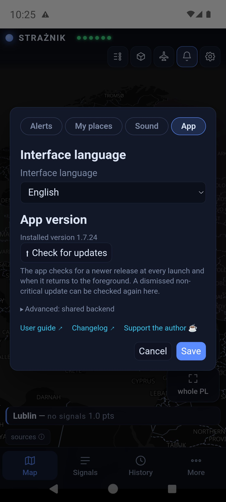
2. My places, language and permissions
Open ⚙ → the My places tab → Open My places. You can save up to 8 profiles, such as Home, Work and Trip. Each has a province and may optionally store a voluntary one-time location. Current notifications are routed by province.
Watch alerts creates a subscription for that province. Several places in one province create one subscription. Turning watching off does not delete the profile. The first saved place sets the map's initial region; an older single-province setting is migrated to a “Home” profile after updating.
A one-time location is read only after you press its button and stores the point, accuracy and reading time. There is no background tracking or online address lookup. You can remove the point separately.
Two operating levels: while the app is closed, minimised or the screen is locked, the notification is province-level. After receiving it, open Strażnik and keep it in the foreground. For a saved exact location, the app calculates the distance to a visible object on the device. It shows an estimated arrival time only when actual speed is available and the heading leads towards that point; otherwise it clearly says that ETA cannot be estimated reliably.
This calculation is not a separate distance alert and is not reliable in the background. It assumes an unchanged heading, may change as new data arrives, and does not replace RCB, RSO or emergency-service instructions.
Polski / English
Selecting a language immediately changes the settings preview. Save confirms it and reloads the app; Cancel keeps the previous language. English covers the interface, object and aircraft descriptions, and map labels. A source name may remain where an English name is unavailable. Quoted external messages are not necessarily translated, and some labels in the current APK may still appear in Polish.
Notifications
Check system notifications, alert channels and full-screen permission in settings. A shortcut to the app's battery optimisation settings is also available. Delivery and presentation depend on your phone's settings and restrictions.
{kind=link}
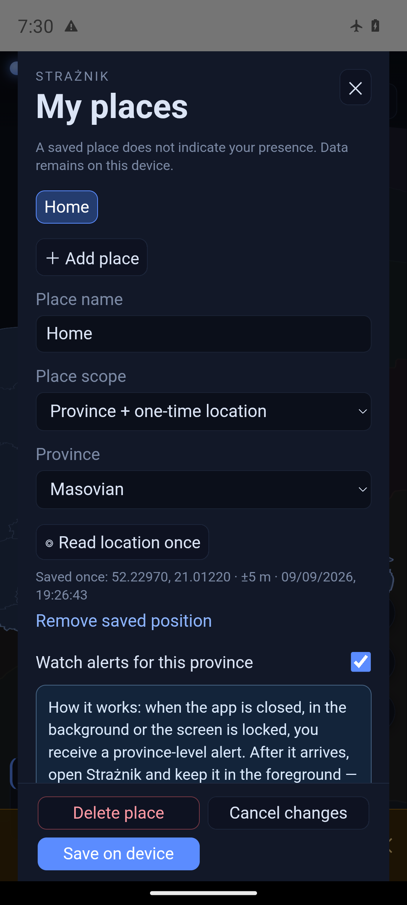
3. The map and new icons
Drag to move, pinch to zoom, and tap an object for details. A province's colour represents its score: below 2 points is blue, 2 or more is yellow, and 4 or more is red. In 3D mode, the height of the province increases with its score.
NEPTUN objects now have distinct shapes as well as colours. ADS-B planes and helicopters keep their familiar silhouettes. The legend no longer includes a separate country-background-colour section.
| Object | Appearance |
|---|---|
| Drone / UAV | A yellow fixed-wing silhouette. |
| Shahed | An orange delta wing. |
| FPV drone | Four rotors; a local drone with no points in this model. |
| Reconnaissance drone | A light-coloured silhouette with long wings. |
| Cruise missile | A red body with wings. |
| Ballistic missile | A slender pink shape with an exhaust flame. |
| KAB guided bomb | A yellow guided-bomb silhouette. |
| MiG-31K — carrier | A purple aircraft silhouette from the NEPTUN source. |
| Unidentified object | A grey diamond with a question mark. |
The circle around an object represents position uncertainty (±km). A larger circle means a larger uncertain area, not a larger destructive range. A dashed line shows a trail only when the source provides positions suitable for movement observation. A point labelled “approximate report area” is not a route.
{kind=link}
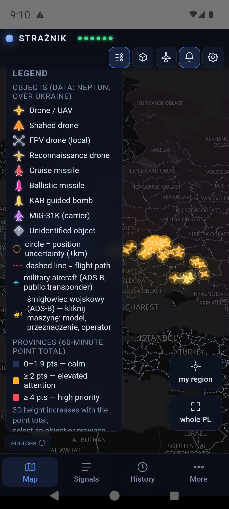
Object details and pictures
An object card shows its type, area, confirmations, confidence, position uncertainty, heading and distance from Poland. ETA appears only for a position suitable for that calculation. The source field confirmed may confirm the report rather than coordinate accuracy. If NEPTUN marks an area as approximate or Strażnik recognises a canonical locality-centre point, distance is rounded to tens of kilometres and the app does not move the marker artificially, draw an apparent route or show ETA. A locality may describe a report's direction or destination rather than the object's position. AI illustrations are reference images and must not be used to identify a model.
Tap an ADS-B aircraft for its callsign, registration, country, model, role, altitude, speed and heading, where available. Follow track displays the collected trail. Without a public transponder signal or reception, there may be no position: the map does not show every military aircraft.
Model photographs (1.7.19): aircraft and helicopter cards use a local library of real photographs. Each is an example aircraft, not the tracked one; equipment and subvariant may differ. When the provider supplies a known type code without a variant description, the app now shows a reviewed family example instead of an empty area. An explicitly conflicting description still blocks the photo. The library now also includes the Boeing 737-800. Author, source and license remain visible below each photo.
{kind=link}
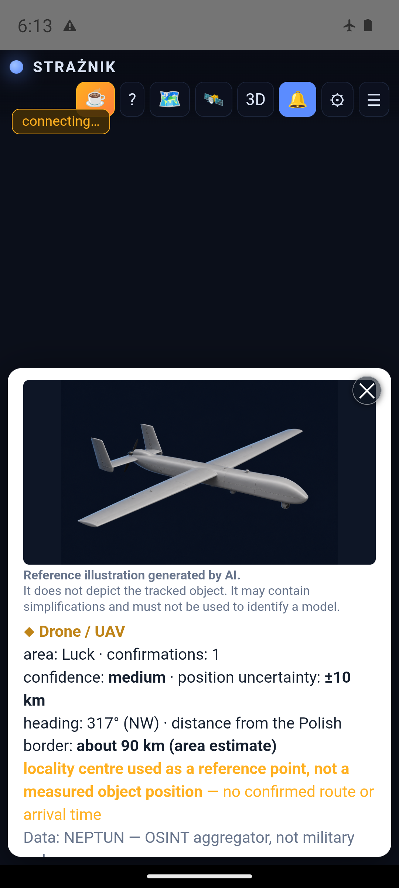
confirmed, but the coordinates match central Lutsk. This is a UI test, not a current object or alert.{kind=link}
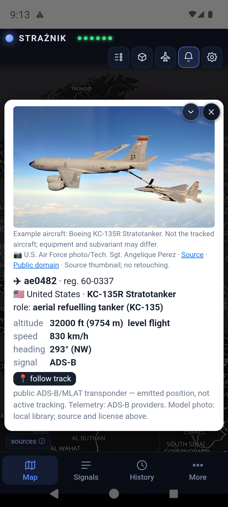
{kind=link}
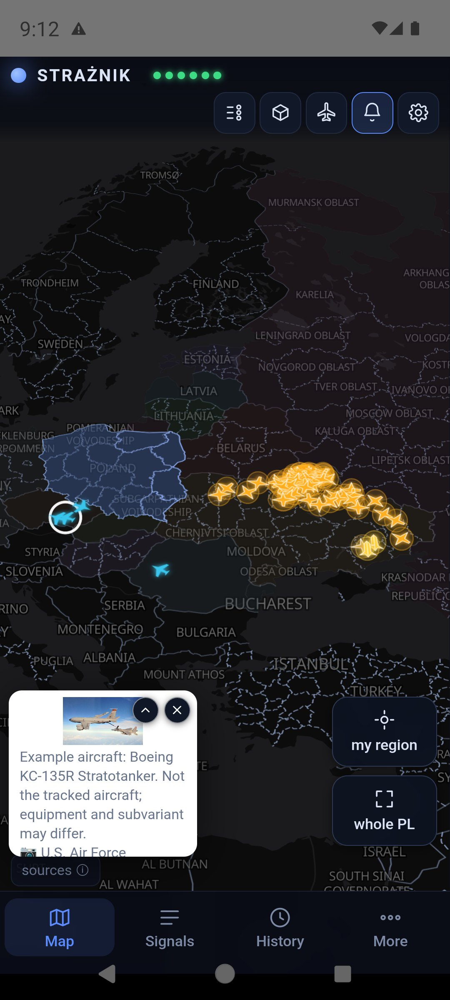
{kind=link}
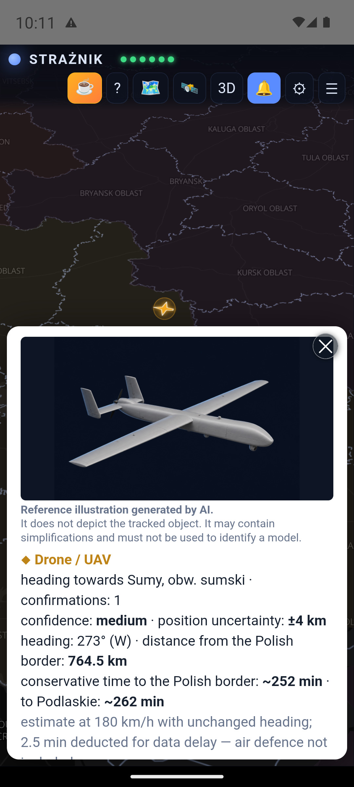
4. Buttons and closing panels
| Control | Action |
|---|---|
| STRAŻNIK + six indicators | Status of NEPTUN, UA Alerts, ADS-B, RSS, RCB and PAŻP. Green means a layer is available, not that safety has been confirmed. Tapping the app name also opens its explanation on a phone. |
| ☕ / ? | Optional support for the author / information about the app and its features. |
| Legend / 🗺️ | Object icons, uncertainty and score thresholds. |
| 🛰️ | Foreign aircraft and recorded observations. |
| 3D / 2D | Switch between raised provinces and a flat map. |
| 🔔 / ⚙ / ☰ | Notifications / settings / signals panel. |
| ⏱ / ◎ / ⤢ | 12-hour history / return to my region / the wider area. |
| Download app / User guide | Website-only buttons; they are not displayed in the APK. |
The signals panel no longer collapses after a few seconds. Close it with the cross, the Map tab or by tapping the map outside it. The legend and other panels also support outside clicks. In settings, use Save to confirm changes.
5. The signals panel
The Signals tab in the bottom bar opens the province cards. Tap a region to inspect the sources behind its score. Your region has an outline and a “my region” label. The panel includes signals from the 60-minute window, objects near the border and public military aviation observations.
Signals are ordered by their actual counted contribution. The displayed number reflects source caps and ageing; a crossed-out value explains why the full raw score was not counted. An article recognised as a repeat of a fresh official RCB alert, a historical report or an aftermath story remains visible but contributes 0 additional points and is labelled accordingly. Different IDs of the same type at an identical area point are treated within one window as updates of one uncertain event unless the source provides a credible object count.
A Spillover entry explains a contribution from another province. Media titles link to their sources: check the original text and publication time.
Cameras in the region opens available views of the surroundings. These are ground cameras, not airborne-object detectors.
{kind=link}
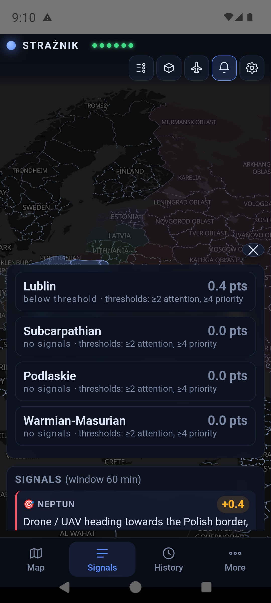
6. Twelve hours of history
Example: the sources behind 2.2 points
This user-supplied screenshot shows elevated attention in Lublin province and contributions from an RCB (RSO) notice and NEPTUN observations. The bottom bar lists four signals; not all of them fit in the visible portion of the panel.
PODGLĄD HISTORII — 15:11 (−10 min) means “history preview”, showing an earlier moment. This is a historical example, not a current alert. Its scores are not a reference table of current weights or evidence of notification delivery time.

Tap the History tab in the bottom bar, then drag the slider left or right. The bar names the mode outright: ⏱ HISTORY MODE. The map and panel show the selected time rather than the live situation. The label gives the time and minutes in the past. ▶ Back to live view returns to the current view. The slider in 1.7.23 is considerably larger: a 44 px touch area and a 28 px handle.
A history bundle is downloaded to your device and scrolling uses that local buffer. Every finger movement does not make a separate server request. Snapshots are normally recorded every two minutes: this is playback of saved samples, not continuous radar footage. The available history depends on continuous recording and source availability.
Consistent aircraft time (1.7.17): the map, aircraft list, foreign-aviation panel and aircraft details all follow the selected time. Later events cannot appear in an earlier view. ▶ Back to live view returns to current data.
A dimmed foreign aircraft is a last recorded position filling a gap between snapshots. It uses only an earlier journal entry, at most 2.5 minutes before the selected time. Details show the record time and explain that the aircraft is absent from the snapshot. “Disappeared” means missing from the available data, not a landing or shoot-down; its timestamp is not necessarily the last transponder emission time. Counters separate snapshot aircraft from last observations.
The 🛰 panel downloads a small server journal covering the last 12 hours, including times when your app was closed. It merges local entries without duplicating matching transitions and excludes entries later than the selected time. Refreshes are limited to one request per minute, not one per slider movement. Journal unavailability and local fallback mode are explicitly labelled. These observations do not add points.
{kind=link}
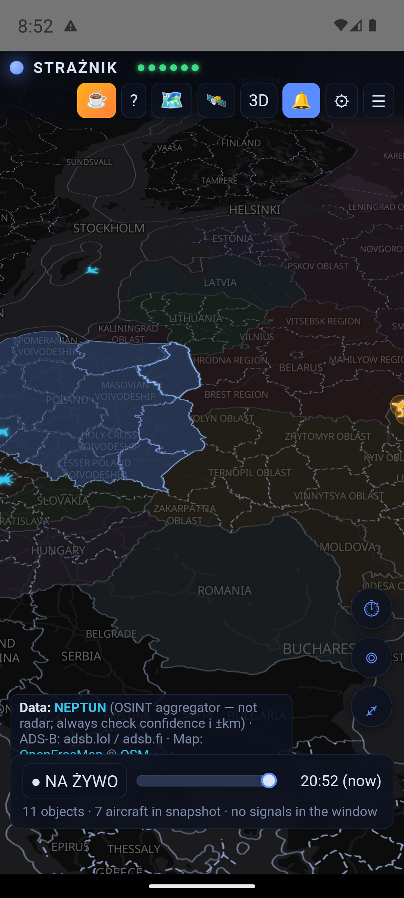
{kind=link}
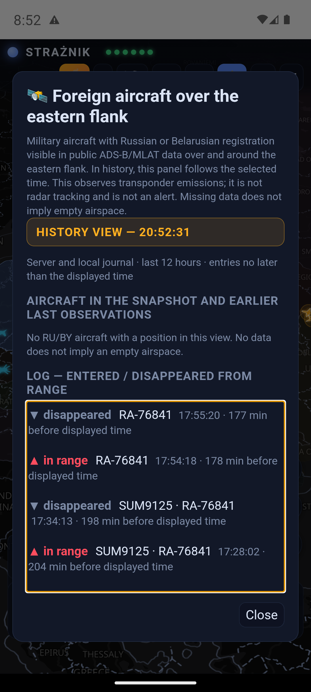
A signal can remain in the 60-minute list after an object disappears from the map. The list describes recorded events; the map shows positions available in a particular snapshot. NEPTUN removes an entry through a source message or replaces the active-object list; it does not provide the reason for removal. Disappearance does not prove interception, a crash or departure from the area. A new identifier at the same approximate point may be a renewed report rather than a new physical object. For some foreign aircraft, a faded last observation may appear, distinguished from a current position.
7. Yellow and red alerts


These two images document earlier tests, not a current threat. Their messages, scores and distances are test examples, not a table of current scoring rules. A screenshot cannot reproduce sound or screen flashing.
| Score | Behaviour |
|---|---|
| Below 2 points | Information remains on the map and in the panel, without a score-threshold alert. |
| 2 to below 4 points | Yellow “ELEVATED ATTENTION”: a short attention sound and a notification, which may appear as heads-up. |
| 4 points or more | Red “HIGH PRIORITY”: a siren, vibration and a full-screen alert when permissions and the system allow it. Acknowledging the alert silences it. |
⚙ → Sound includes Test: attention, Test: siren and Test: full alert. These are local tests on your device; they do not confirm push delivery from the server. Version 1.7.15 increased the red siren's level. Actual loudness also depends on the phone and its audio settings.
8. Push, the website and fallback mode
Android: the server sends push notifications through Firebase for your selected province. This is designed to work while the app is closed or the screen is locked. It requires connectivity and correct phone settings. Android's “Force stop” can prevent delivery until the app is opened again. The old permanently running “listening active” service is no longer used.
Browser: bookmarking the address does not enable alerts. An open tab can display and play alerts; sound requires user interaction. Delivery with the tab closed requires a separate permission and Web Push subscription, plus browser and operating-system support. Web Push covers only provinces enabled with Watch alerts; opening the page refreshes the assignment after saved places change. Its behaviour is not equivalent to Android's native full-screen alert.
Server outage: after unsuccessful connection attempts, the open app starts its built-in engine. It still needs internet access to the sources. The current code checks server recovery every minute and stops its own polling once it reconnects. Switching is postponed during an active alert. Fallback mode does not provide replacement round-the-clock monitoring after the app is closed.
A test announcement may appear as a message you can acknowledge and close. An announcement alone does not verify alarm delivery.
9. How scoring works
The basic window is 60 minutes. A signal retains full weight for 30 minutes, then fades linearly to zero. Each source class has a contribution cap; another observation of the same NEPTUN track or a new ID at an identical area point is not automatically counted as a new object.
| Source | What is considered | Weight / cap |
|---|---|---|
| NEPTUN objects | Type, reported object count, border distance, course, confidence, confirmations, observation status and position quality. A source-reported area uses ×0.6; a recognised locality centre uses ×0.5. | Up to 8 points in total |
| UA alerts | An air alert in selected western Ukrainian regions. | 1 point |
| Media | An airborne object plus an event adds 1 point. An unambiguous current operational report—such as an air alert, sirens, scrambled aircraft, interception or an object impact—adds 1.5 points. The phrase “airspace violation” alone adds 1 point. The entire RSS class is capped at 1.5, so articles alone cannot trigger yellow. Exercises, historical stories, legal aftermath and a repeated fresh RCB alert remain visible with a 0-point contribution; merely mentioning RCB does not suppress new information. | 0 / 1 / 1.5 points; cap 1.5 |
| RCB / RSO | Qualifying published airborne-threat warnings. Source publication time can differ from SMS delivery time. | 2 points, cap 2 |
| ADS-B | At least 3 aircraft and more than twice the baseline for the same time of day, collected over 7 days. | 1 point, cap 1 |
| PAŻP / PANSA | Rare ADHOC/R/NPZ/D zones from the ground to a flight level, with filters for routine and repeated designators. Activation alone does not prove a military threat. In the north it weighs twice as much — why. | 0.5 points (north 1), cap 1 |
| Baltic media | LT/LV/EE incidents as context for Podlaskie and Warmian-Masurian. A recognised cancellation clears the same incident's contribution. | 1 point |
| Neighbouring airspace | Selected LT/EE restrictions and northern Romania (47°N and above). Latvian zones and official LV notices are observation-only, with no points. | 0.3 points, cap 0.6 |
Objects: a smooth distance curve
Type weights: ballistic 3.0; MiG-31K 2.6; cruise missile 2.4; KAB 1.8; Shahed 1.4; UAV 1.1; reconnaissance drone 0.5; FPV 0. This is multiplied by the square root of the reported object count and factors for data quality and course, among others.
The distance factor is interpolated through 0 km ×1.7; 15 ×1.6; 45 ×1.3; 80 ×1.0; 110 ×0.7; 150 ×0.4; 200 ×0.25; 250 ×0.1. At 250 km or beyond the ordinary contribution is zero. Unknown-course scoring is reduced and limited to nearby objects. Missiles and MiG-31K within 60 km with at least two confirmations have a 2-point floor, scaled by the course factor.
Estimated arrival time
The card estimates time to Poland's border and to the selected province's boundary, not to your address. ETA is disabled when NEPTUN marks the position as approximate or Strażnik recognises a locality-centre point. For other positions, the app uses a source speed where available, otherwise a typical class speed. A 2.5-minute buffer based on earlier source-delay measurements is deducted. This buffer does not cover every possible delay.
The current ETA threshold mechanism refers to Poland's border: only for a position not marked as approximate, with a known heading, at least two confirmations and medium or high confidence, it may raise an object's contribution to 2 points at ≤10 minutes or 4 points at ≤5 minutes. It does not add a second set of points for the same object.
Spillover to neighbouring provinces
A source province with at least 2 points from signals other than a regional RCB alert can contribute 40% to its first ring of neighbours, 16% to its second, and so on within the algorithm's limits. Official RCB/RSO notices are not propagated: the issuer already specifies their area, and the same notice may be issued separately for several provinces. This provides regional context; it does not predict an object's route. The panel explains each contribution.
Spillover alone never sends a notification. A province with no signal of its own shows the raised level on the map and in the panel, but the phone stays silent — one event next door must not wake several regions at once. The notification fires once your own province records a signal of its own.
10. Features in the current release
Polish and English
Preview the language before saving, with English aircraft descriptions and geographic map labels.
Distinct object icons
Separate silhouettes for drones, missiles, KAB and unidentified objects, a current legend and labelled reference illustrations.
Easier inspection
A panel without timed collapse, object details, local history scrolling and foreign aircraft observations.
Updates and the siren
Release notes in the updater, deferral of non-critical updates and an increased red-siren level.
Full change history: GitHub releases.
11. Limitations and troubleshooting
- Red indicator: a layer is unavailable or reports an error; other sources may still work. The six indicators do not separately represent every additional source.
- Missing map with working signals: map tiles are downloaded separately. Check connectivity, try another network and restart the app. An antivirus or proxy intercepting HTTPS can block these connections. The production APK does not trust user-added certificates; the old advice that it trusts Avast certificates is obsolete. Do not solve this by permanently disabling protection.
- No push: check your region, permissions, channels, connectivity and whether the app was force-stopped. An in-app sound test does not verify the complete push path.
- Object only in the list: a signal and a current position have different availability windows. Check the time, history mode and last observation.
- Incomplete coverage: NEPTUN is an OSINT aggregator, ADS-B depends on public transmissions and receivers, and messages or RSS can be delayed. Missing data or a zero score does not prove that no threat exists.
12. Your own server — optional
A blank address under ⚙ → App → Advanced: shared backend selects the default Strażnik server. Enter your own address only if you operate a compatible backend and its notification services.
HTTPS with a system-trusted certificate is required. External HTTP and manually installed certificates are not supported by the production APK. The app's internal localhost address is a separate technical exception. Backend setup is documented in the repository README.
13. Privacy and sources
No account, advertising or behavioural analytics. “My places” profiles, names and one-time location points are stored locally; Android backup is disabled for the app. Exact locations are not sent to the Strażnik VPS or notification content. Province names and the device subscription identifier are handled by the push provider. The phone's location system may use system and network providers, so Strażnik does not claim that the position reading itself is entirely offline.
The server and providers of maps, notifications, photos and data receive network requests and may keep ordinary technical logs. No in-app telemetry does not mean no network traffic. Downloaded server history is replayed from device memory; the built-in engine stores its own snapshots locally. Size depends on data volume and covers a rolling 12-hour window.
Which PAŻP zones score, and which do not
An airspace zone is a piece of sky temporarily withdrawn from ordinary traffic. The Polish Air Navigation Services Agency declares them every day in a daily plan. The overwhelming majority have nothing to do with a threat: they are military training, parachute jumps, gliding and reservations for commercial drones. Measured on 12 September 2026: 50 zones over Poland met the initial criteria, and 31 remained after civil aviation was filtered out. If every one of them added points, the app would sit at yellow every day and stop meaning anything.
| Zone type | What it usually means | Scores? |
|---|---|---|
| D — danger area | Activity hazardous to aircraft: live firing, military exercises. | Yes, if it meets the three conditions below |
| R — restricted area | Only aircraft with clearance may enter. | Yes, on the same conditions |
| NPZ — no-flight zone | Closed to air traffic. | Yes, on the same conditions |
| ADHOC — ad-hoc zone | Raised the same day, usually for a few hours. | Yes, on the same conditions |
| TSA / TRA — temporary segregated and reserved areas | Exercises and military flights planned in advance. They stand almost every day. | No — shown on the map, but they add no points |
| ATZ — aerodrome traffic zone | Ordinary traffic around an airfield. | No — not even displayed |
| Zones marked PJE, GLD, CLN, BSP, UAV | Parachuting, gliding, unmanned flights — civil and sport aviation. | No — filtered out regardless of type |
A D, R, NPZ or ADHOC zone scores only when it meets all three conditions at once:
- It reaches from the ground upwards (GND–F###). A narrow band at altitude is a military transit, not a piece of sky closed over people.
- The same designator has not appeared in the last 7 days. A zone that returns every day is routine, even if it formally “activates” each morning.
- It lies over the eastern flank or the north. In the remaining provinces a zone is shown for information but adds no points.
{kind=link}
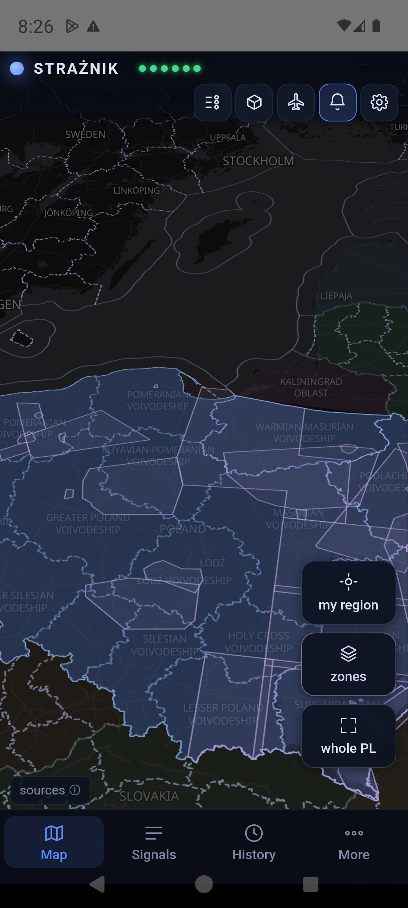
{kind=link}
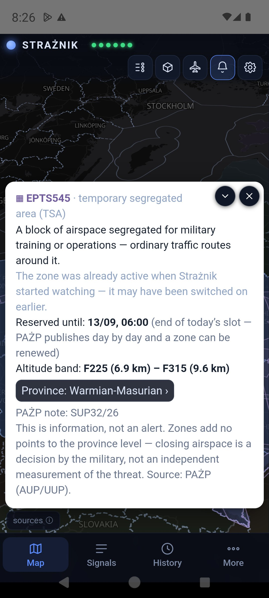
Where this split came from
Not from assumptions, but from measurement. For four days in August 2026 the app logged every zone activation without awarding any points, purely to see what the data actually contains. Of 799 activations, 413 started at ground level, but most of those ended low and were routine; real ground-to-flight-level closures numbered about a hundred. A separate three-day test showed that even after that filter, six out of seven hits over the eastern flank were ordinary background. Hence the third condition — the seven-day memory.
The weight is deliberately low (0.5 points against a yellow threshold of 2.0), because a zone activation is the consequence of someone’s decision, not an independent measurement of a threat. The military also closes airspace simply to have room for an exercise. A zone on its own never raises the level — it has to meet a second, independent source.
Why a zone weighs twice as much in the north
NEPTUN, the layer that provides the most warning time, watches Ukraine. For Pomerania and the Kaliningrad flank it yields exactly zero points — not because those areas are safe, but because there is no data from there. What remains: PAŻP zones, military traffic in ADS-B, media, RCB and neighbouring airspace closures over the Baltic. That is why, from version 1.7.30, a zone over Pomeranian, West Pomeranian, Warmian-Masurian and Kuyavian-Pomeranian weighs 1 point instead of 0.5.
The safety rule is unchanged: no single signal raises the level. Zone 1 point + elevated ADS-B traffic 1 point = 2 points, the yellow threshold. Zone 1 point + an air incident reported by Lithuanian, Latvian or Estonian media 1 point = 2 points as well. A zone alone is still 1 point and silence.
Every active zone — including those that do not score — is visible on the map once you turn on the zones button. Tapping a zone explains what it is, since when Strażnik has seen it active, and how long the current reservation runs.
Data: NEPTUN · adsb.lol / adsb.fi and fallback providers · RCB / RSO · PAŻP · regional and Baltic media · neighbouring airspace zones. Map: OpenFreeMap, © OpenStreetMap. Aircraft photo providers and photographers are credited in the cards.